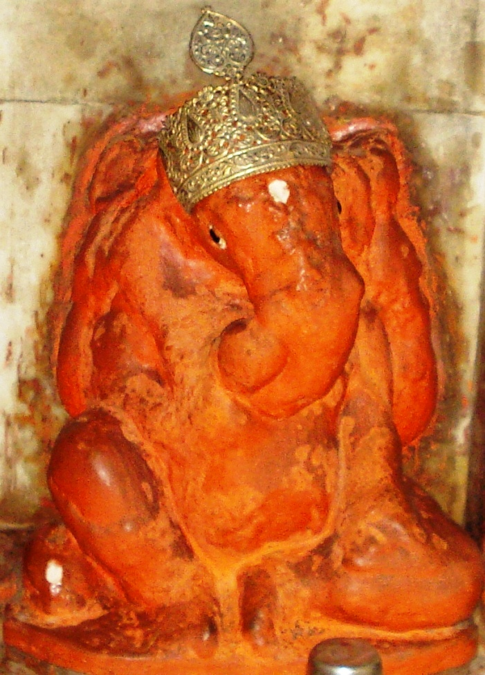

<?xml version="1.0" encoding="UTF-8"?><rss version="2.0"
	xmlns:content="http://purl.org/rss/1.0/modules/content/"
	xmlns:wfw="http://wellformedweb.org/CommentAPI/"
	xmlns:dc="http://purl.org/dc/elements/1.1/"
	xmlns:atom="http://www.w3.org/2005/Atom"
	xmlns:sy="http://purl.org/rss/1.0/modules/syndication/"
	xmlns:slash="http://purl.org/rss/1.0/modules/slash/"
	>

<channel>
	<title>Manikarnika Vinayak &#8211; Varanasi Temples</title>
	<atom:link href="index.html" rel="self" type="application/rss+xml" />
	<link>../../../../index.html</link>
	<description>Temples of Varanasi as referred to in Kashi Khand</description>
	<lastBuildDate>Thu, 19 Jun 2025 05:16:46 +0000</lastBuildDate>
	<language>en-US</language>
	<sy:updatePeriod>hourly</sy:updatePeriod>
	<sy:updateFrequency>1</sy:updateFrequency>
	<generator>https://wordpress.org/?v=4.6.29</generator>
	<item>
		<title>MANIKARNIKA VINAYAK</title>
		<link>../../../../vinayak-temples/manikarnika-vinayak/index.html</link>
		<pubDate>Sat, 08 May 2010 02:31:36 +0000</pubDate>
		<dc:creator><![CDATA[admin]]></dc:creator>
				<category><![CDATA[Manikarnika Vinayak]]></category>
		<category><![CDATA[Vinayak Temples]]></category>
		<category><![CDATA[kashi ghats photos]]></category>
		<category><![CDATA[manikarnika]]></category>

		<guid isPermaLink="false">../../../../p=136.html</guid>
		<description><![CDATA[Mani Karnika Vinayak is located at Manikarnika Ghat opposite to the main gate of  Satua Baba Ashram. In Kashi Khand it is mentioned that Manikarnika Vinayak removes all obstacles.  Devotees can travel upto Chowk by rickshaw and walk on foot to this place. Alternatively they can travel by boat upto Manikarnika Ghat and walk up the [&#8230;]]]></description>
				<content:encoded><![CDATA[<p>Mani Karnika Vinayak is located at Manikarnika Ghat opposite to the main gate of  Satua Baba Ashram. In Kashi Khand it is mentioned that Manikarnika Vinayak removes all obstacles.  Devotees can travel upto Chowk by rickshaw and walk on foot to this place. Alternatively they can travel by boat upto Manikarnika Ghat and walk up the steps and reach the place.</p>
<p></p>
<p style="text-align: center;"><strong>(MANIKARNIKA VINAYAK)</strong></p>
<p><strong>TYPES OF POOJA</strong></p>
<h2>The place of worship is open practically throughout and devotees can perform pooja by themselves.</h2>
]]></content:encoded>
			</item>
	</channel>
</rss>
